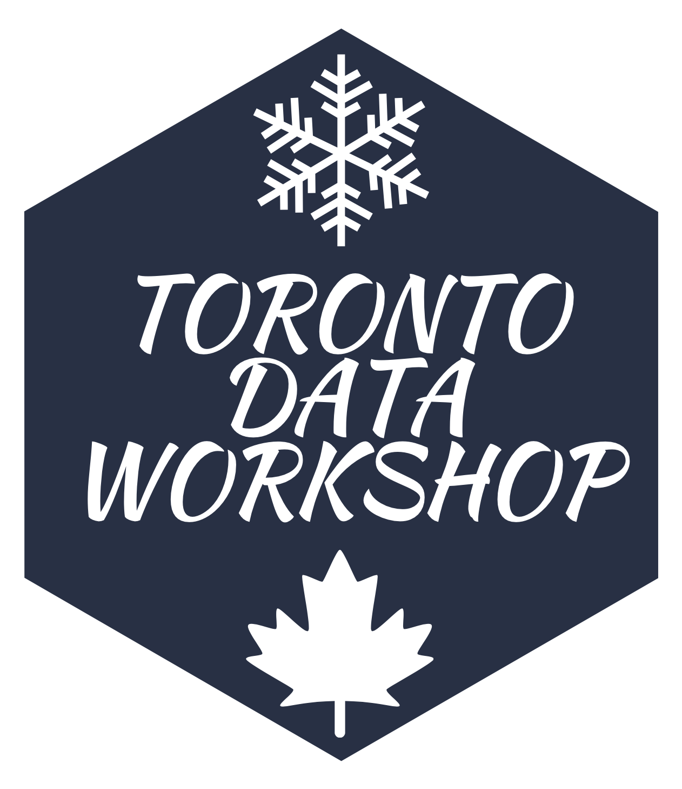
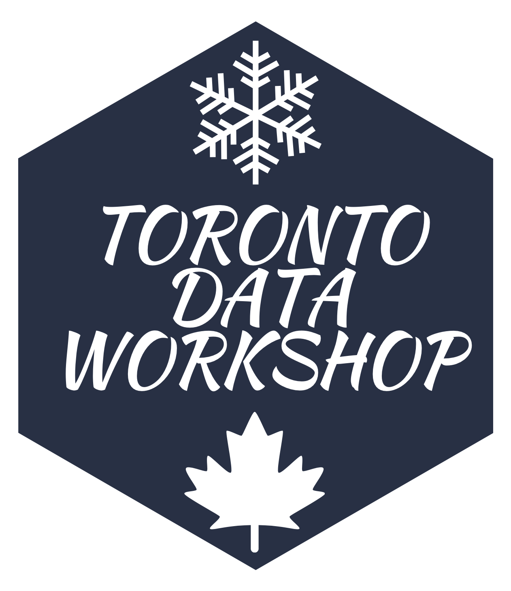
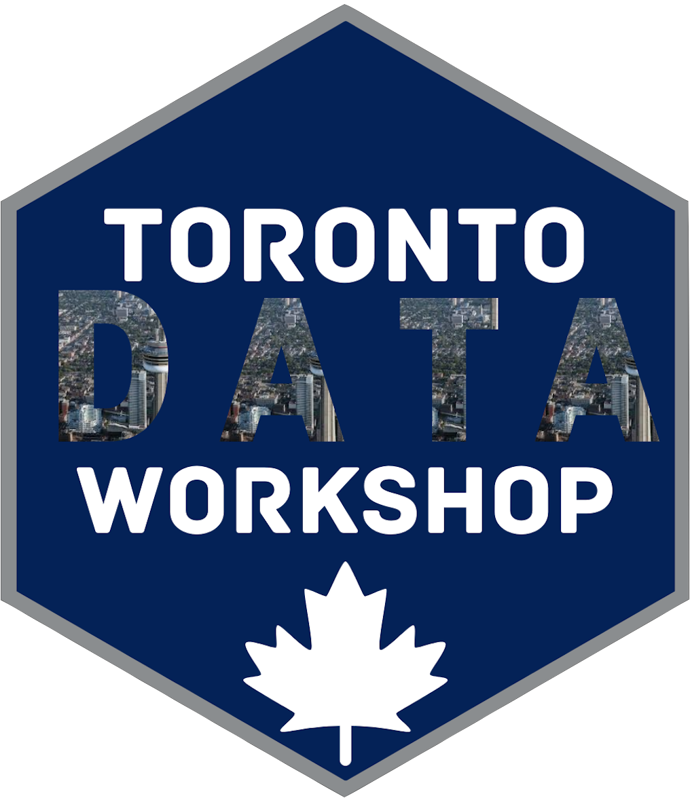
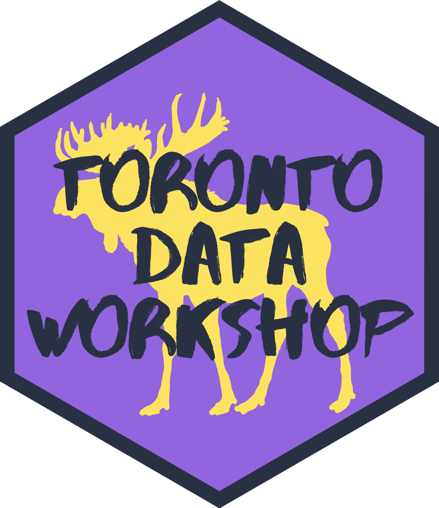

Overview
The Toronto Data Workshop (TDW) brings together academia and industry to consider, collate, share, and disseminate best practices in the initial data-centric steps of a data science project: collection; cleaning; storage; retrieval; dissemination; and protection. We meet weekly for an hour and aim to have a roughly even split of participants from academia and industry over the course of each term. For an invitation please sign up here. Anyone is welcome to attend - you dont need to be affiliated with the university.
The current organising committee is: Faria Khandaker, Kelly Lyons, and Rohan Alexander. The TDW is a joint initiative between the Faculty of Information and the Department of Statistical Sciences at the University of Toronto and we especially thank Dean Wendy Duff and Chair Radu Craiu for their support.
Winter 2021
 

Thanks to Paul Hodgetts for the Jays-inspired sticker.
| Date | Speaker | Topic | Recording |
|---|---|---|---|
| Thu 14 Jan, 4:30-5:30pm | Andrew Miles, University of Toronto (jointly hosted with the UTM Collaborative Digital Research Space.) | Code, plots, and values | https://youtu.be/mdjOoKT-f7E |
| Wed 20 Jan, 4:30-5:30pm | Zia Babar, University of Toronto | Derivative data security. | https://youtu.be/fdVZqvECXXQ |
| Thu 28 Jan, 4:30-5:30pm | Irene Duah-Kessie, University of Toronto | Bias and fairness in health. | https://youtu.be/xwWvOeSXu5o |
| Thu 4 Feb, 4:30-5:30pm | Kathy Ge, Uber | Experimentation and product design. | |
| Thu 11 Feb, 4:30-5:30pm | Garrick Aden-Buie, R Studio | TBA | |
| Thu 18 Feb, 4:30-5:30pm | Annie Collins, Asel Kushkeyeva, Haoluan Chen, Isaac Ehrlich, Mariam Walaa, Marija Pejcinovska, Mathew Wankiewicz, Michael Chong, Paul Hodgetts, Rohan Alexander, Samantha-Jo Caetano, Shirley Deng, and Yena Joo, University of Toronto | DoSS toolkit launch. | |
| Thu 25 Feb, 9:00-5:30pm | Danielle Smalls-Perkins, Google, Fiona Fidler, University of Melbourne, Garret Christensen, US FDIC, Jake Bowers, University of Illinois & The Policy Lab, Lauren Kennedy, Monash University, Mauricio Vargas, Catholic University of Chile & Nicolas Didier, Arizona State University, Mine etinkaya-Rundel, University of Edinburgh, Radu Craiu, University of Toronto, Riana Minocher, Max Planck Institute for Evolutionary Anthropology, Shiro Kuriwaki, Harvard University, Tiffany Timbers, University of British Columbia, Tom Barton, Royal Holloway, University of London, Tyler Girard, University of Western Ontario, Wendy Duff, University of Toronto, Wijdan Tariq, University of Toronto, Yanbo Tang, University of Toronto | Toronto Data Workshop on Reproducibility | |
| Fri 26 Feb, 9:00-5:30pm | Amber Simpson, Queens University, Andrs Cruz, Pontificia Universidad Catlica de Chile, Annie Collins, University of Toronto, Emily Riederer, Capital One, Eva Vivalt, University of Toronto, Florencia DAndrea, National Institute of Agricultural Technology, Heidi Seibold, Helmholtz AI Cooperation Unit, John Blischak, Freelance scientific software developer, John McLevey, University of Waterloo, Julia Schulte-Cloos, LMU Munich, Monica Alexander, University of Toronto, Nancy Reid, University of Toronto, Nick Radcliffe, University of Edinburgh, Ryan Briggs, University of Guelph, Sharla Gelfand, Freelance R Developer, Shemra Rizzo, Genentech, Simeon Carstens, Tweag/IO | Toronto Data Workshop on Reproducibility | |
| Thu 4 Mar, 4:30-5:30pm | Petros Pechlivanoglou, The Hospital for Sick Children (SickKids) Research Institute | Simulation and retrospective data for health economic decision making. | |
| Thu 11 Mar, 4:30-5:30pm | Lucas Cherkewski, Canadian Digital Service | Using publicly-available data. | |
| Thu 18 Mar, 4:30-5:30pm | Sofia Ruiz Suarez, National University of Comahue | Animal tracking data. | |
| Thu 25 Mar, 4:30-5:30pm | Alex Cookson, Royal Canadian Mint | The power of great datasets. | |
| Thu 1 Apr, 4:30-5:30pm | Vik Pant, Natural Resources Canada | Integrating science & policy through DS & AI. | |
| Thu 8 Apr, 4:30-5:30pm | Faria Khandaker, University of Toronto | Object oriented process mining. | |
| Thu 15 Apr, 4:30-5:30pm | Emily A. Sellars, Yale University | Data issues in Mexican demographic history. | |
| Thu 22 Apr, 4:30-5:30pm | Aimee Schwab-McCoy, Creighton University, Ashley Juavinett, UC San Diego, Samantha-Jo Caetano, University of Toronto | Panel on teaching data-focused topics. |
- Thursday, 14 January, 4:30-5:30pm
Andrew Miles, University of Toronto
Jointly hosted with Elizabeth Parke and the UTM Collaborative Digital Research Space.
Andrew Miles is Assistant Professor of Sociology at the University of Toronto and Director of the Morality, Action, and Cognition Lab.
Topic: Code, plots, and values.
Recording: https://youtu.be/mdjOoKT-f7E - Wednesday, 20 January, 4:30-5:30pm
Zia Babar, University of Toronto
Zia Babar obtained his PhD from the University of Toronto where his research studies focused on the analysis and design of data-centered information systems for enabling enterprise transformation. He is engaged in a multi-year research engagement with IBM Research Labs and is a startup technical mentor at WeWork Labs. He is the organizer of technology meetup groups in both Toronto and Waterloo, and a course instructor at the Faculty of Information, University of Toronto.
Zia will provide a background on data security approaches, and a demonstration of machine learning and deep learning techniques that can be used for providing derivative data security. - Thursday, 28 January, 4:30-5:30pm
Irene Duah-Kessie, University of Toronto
Irene Duah-Kessie is a graduate of the University of Torontos Master of Science in Sustainability Management program. Throughout her studies, Irene published her research on racial income inequality in Toronto with the Wellesley Institute and is currently a part of the Turtle Island Journal of Indigenous Health Editorial Team. Irene is a Project Manager at Across Boundaries leading an initiative to address food security and mental health challenges in Torontos Black community. She is also the founder of Rise In STEM, a grassroots organization that aims to increase access to STEM learning opportunities in Black and marginalized communities.
Topic: Exploring algorithmic bias and fairness and its impact on health outcomes faced by racialized communities. - Thursday, 4 February, 4:30-5:30pm
Kathy Ge, Uber
Kathy is a data scientist with Uber Eats primarily focused on the shopping experience including ranking and recommendations throughout the order flow. She received her M.Sc. in Computer Science and B.Sc in Computer Science and Statistics from the University of Toronto.
Topic: How data insights and experimentation help drive product design and intelligent recommendations on the Uber Eats platform. - Thursday, 11 February, 4:30-5:30pm
Garrick Aden-Buie, R Studio
Garrick is a Data Science Educator at RStudio who lives in sunny St.Petersburg, Florida. His passion is combining creative coding with programming education, using code to build tools that teach coding to new and advanced R users alike. Like tidyexplain: a project that used ggplot2 and gganimate to reimagine database operations as colorful flying boxes instead of the typical Venn diagrams. Garrick has developed a number of open source addins and packages for RStudiosuch regexplain, shrtcts and rsthemesand is always easily distracted by projects that combine R Markdown and online learning or teaching.
Topic TBA - Thursday, 18 February, 4:30-5:30pm
Special guest Bethany White (Department of Statistical Sciences).
Annie Collins, Asel Kushkeyeva, Haoluan Chen, Isaac Ehrlich, Mariam Walaa, Marija Pejcinovska, Mathew Wankiewicz, Michael Chong, Paul Hodgetts, Rohan Alexander, Samantha-Jo Caetano, Shirley Deng, and Yena Joo, University of Toronto
University of Toronto DoSS toolkit launch.
The DoSS toolkit is a series of self-paced lessons that students can go through ahead of class, to achieve badges for various levels of accomplishment with R. Instructors can use the badges to work out the level of the class and either direct students to the toolkit to address deficiencies or cover missing aspects themselves. - Thursday, 25 February, 9:00-5:30pm
Amber Simpson, Queens University; Andrs Cruz, Pontificia Universidad Catlica de Chile; Annie Collins, University of Toronto; Emily Riederer, Capital One; Eva Vivalt, University of Toronto; Florencia DAndrea, National Institute of Agricultural Technology; Heidi Seibold, Helmholtz AI Cooperation Unit; John Blischak, Freelance scientific software developer; John McLevey, University of Waterloo; Julia Schulte-Cloos, LMU Munich; Monica Alexander, University of Toronto; Nancy Reid, University of Toronto; Nick Radcliffe, University of Edinburgh; Ryan Briggs, University of Guelph; Sharla Gelfand, Freelance R Developer; Shemra Rizzo, Genentech; Simeon Carstens, Tweag/IO
Toronto Data Workshop on Reproducibility - Friday, 26 February, 9:00-5:30pm
Danielle Smalls-Perkins, Google; Fiona Fidler, University of Melbourne; Garret Christensen, US FDIC; Jake Bowers, University of Illinois & The Policy Lab; Lauren Kennedy, Monash University; Mauricio Vargas, Catholic University of Chile & Nicolas Didier, Arizona State University; Mine etinkaya-Rundel, University of Edinburgh; Radu Craiu, University of Toronto; Riana Minocher, Max Planck Institute for Evolutionary Anthropology; Shiro Kuriwaki, Harvard University; Tiffany Timbers, University of British Columbia; Tom Barton, Royal Holloway, University of London; Tyler Girard, University of Western Ontario; Wendy Duff, University of Toronto; Wijdan Tariq, University of Toronto; Yanbo Tang, University of Toronto
Toronto Data Workshop on Reproducibility - Thursday, 4 March, 4:30-5:30pm
Petros Pechlivanoglou, The Hospital for Sick Children (SickKids) Research Institute
Petros Pechlivanoglou, PhD, is a Scientist at The Hospital for Sick Children (SickKids) Research Institute and an Assistant Professor at the University of Toronto, Institute of Health Policy Management and Evaluation. He studied economics in his native country, Greece, econometrics at the University of Groningen, the Netherlands and obtained a PhD in health econometrics from the same university. He completed a post-doctoral fellowship at the University of Toronto, within the Toronto Health Economics and Technology Assessment (THETA) Collaborative where he focused on methodological aspects around the application of decision analysis in health-care policy.
Petros will talk about marrying simulation modeling and retrospective data for health economic decision making. - Thursday, 11 March, 4:30-5:30pm
Lucas Cherkewski, Canadian Digital Service
Lucas Cherkewski is a policy advisor at the Canadian Digital Service (CDS). He helps delivery teams improve government services. From that experience, he advises on structural changes to make better services the default. This work includes plenty of data-enabled research and analysisLucas is in a happy place when his work leads him to spend an afternoon poking around a dataset, trying to better understand government so he can help change it.
Lucas will talk about a few of these small CDS research projects, using publicly-available data to better understand the governments operations. - Thursday, 18 March, 4:30-5:30pm
Sofia Ruiz-Suarez, National University of Comahue
Sofia Ruiz-Suarez holds an undergraduate degree in mathematics from the University of Buenos Aires and now is a PhD candidate at the institute for Research on Biodiversity and Environment. She also teaches mathematics at the University of Comahue and leads R-Ladies at her local city. Her research is focused on bayesian statistics with applications in animal behaviour and movement.
Sofia will talk about animal tracking data. She will explain how sensors are used to track animal movement and activities, the characteristics of this type of data and how to deal with it.
- Thursday, 25 March, 4:30-5:30pm
Alex Cookson, Royal Canadian Mint
Alex Cookson helps the Customer Intelligence team at the Royal Canadian Mint make the most of their data. When hes not working on A/B testing, recommendation engines, or exploratory data analysis at the Mint, he can be found participating in Tidy Tuesday or thinking up cool datasets to explore. And when hes not doing that, hes probably cycling around Toronto or doting on his two cats, Tom Tom and Ruby.
Alex will explore the power of great datasets, and discuss the importance of interesting, fun datasets as a way to guide and motivate learning R. - Thursday, 1 April, 4:30-5:30pm
Vik Pant, Natural Resources Canada.
Dr.Vik Pant is the Chief Scientist and Chief Science Advisor of Natural Resources Canada (NRCan). He leads the Office of the Chief Scientist at NRCan and reports directly to the Deputy Minister. His office oversees the development and implementation of evidence-based science policy across NRCan sectors and agencies. His office also manages NRCans enterprise-wide technology strategy and portfolio of science products. He also runs the Digital Accelerator, which is an innovation platform for designing and launching AI-driven software products in NRCan. Vik is also the Founder of Synthetic Intelligence Forum, which is a leading community of practice focused on the industrial application of Artificial Intelligence (AI). He earned a doctorate from the Faculty of Information (iSchool) in the University of Toronto, a masters degree in business administration with distinction from the University of London, a masters degree in information technology from Harvard University, where he received the Deans List Academic Achievement Award, and an undergraduate degree in business administration from Villanova University. Vik serves as an Adjunct Professor in the Faculty of Information (iSchool) at the University of Toronto.
Vik will discuss supporting the Integration of Science and Policy through Data Science and Artificial Intelligence. - Thursday, 8 April, 4:30-5:30pm
Faria Khandaker, University of Toronto
Faria is a 2nd year student of the Information Systems and Design Concentration at the Faculty of Information and is one of the co-hosts of the Toronto Data Workshop. She holds an Honours Bachelor of Science Degree in Anthropology and Human Biology from the University of Toronto Scarborough. Since starting her masters, she became interested in research related to data-driven decision making within organizations. Under the supervision of Professor Arik Senderovich, she is researching topics related to the application of Machine Learning within the field of Process Mining and exploring various methodologies for gaining insights from email driven business processes.
Faria will discuss Object Oriented Process Mining. - Thursday, 15 April, 4:30-5:30pm
Emily A. Sellars, Yale University
Emily A. Sellars is an assistant professor in the Department of Political Science at Yale University. Before coming to Yale, she was an assistant professor in the Bush School of Government and Public Service at Texas A&M University and a postdoctoral scholar at the University of Chicagos Harris School of Public Policy. She received her Ph. D. in Political Science and Agricultural and Applied Economics from the University of WisconsinMadison in 2015. Her research interests are at the intersection of political economy and development economics. Her research examines the political economy of emigration and population.
Emily will discuss issues in Mexican demographic history. - Thursday, 22 April, 4:30-5:30pm
Aimee Schwab-McCoy, Creighton University, Ashley Juavinett, UC San Diego, Samantha-Jo Caetano, University of Toronto
Aimee Schwab-McCoy is an Assistant Professor of Statistics at Creighton University. Ashley Juavinett is a neuroscientist, an educator, and a writer, currently working as an Assistant Teaching Professor at UC San Diego. Samantha-Jo Caetano is an Assistant Professor, Teaching Stream, at the University of Toronto.
Panel on teaching data-focused topics.
Fall 2020

Thanks to Hidaya Ismail for the brilliant maple leaf and dinosaur hex stickers.
| Date (Toronto time) | Speaker | Topic | Recording |
|---|---|---|---|
| Thu, 3 Sep, 4-5pm | Erik Drysdale (The Hospital for Sick Children) | Using hospital data | |
| Tue, 8 Sep, 3:30-4:30pm | Sophie Bennett (Industry data scientist) | UK A levels algorithm issues (jointly hosted with SRI) | |
| Thu, 10 Sep, 4-5pm | A Mahfouz, Diego Mamanche Castellanos, Hidaya Ismail, Ke-Li Chiu & Paul Hodgetts (University of Toronto) | Various R packages and research developed by students | |
| Thu, 17 Sep, 4-5pm | Amber Simpson (Queens University) | Cancer and AI | |
| Thu, 24 Sep, 4-5pm | Chelsea Parlett-Pelleriti (Chapman University) | Talking to non-statisticians about statistics | |
| Thu, 1 Oct, 4-5pm | Florence Valle-Dubois (Universit de Montral) | Canadian demographics by riding (1991-2015) | |
| Thu, 8 Oct, 4-5pm | Yim Register (University of Washington Data Lab) | Self-advocacy within machine learning systems | |
| Thu, 22 Oct, 4-5pm | Jeff Waldman, Leanne Trimble, Leslie Barnes, & Lisa Strug (University of Toronto) | Panel on data-focused resources at U of T | |
| Thu, 29 Oct, 4-5pm | Fei Chiang (McMaster University) | Data currency and applications | |
| Thu, 5 Nov, 4-5pm | Andrew Whitby (Industry data scientist) | Censuses | |
| Mon, 9 Nov, 4-5pm | Tom Cardoso (Globe and Mail) | Bias Behind Bars | |
| Thu, 12 Nov, 4-5pm | Kevin Armstrong (University of Toronto) | Measuring poverty for NGOs | |
| Thu, 19 Nov, 4-5pm | Michael Chong (University of Toronto) | High-throughput Bayesian modelling workflow | https://youtu.be/xM1vf_KT76g |
| Thu, 26 Nov, 4-5pm | Postponed | ||
| Thu, 3 Dec, 5-6pm | Monica Alexander (University of Toronto) | Using Facebook advertising data to estimate migration | https://youtu.be/xM1vf_KT76g |
| Thu, 10 Dec, 4-5pm | Shabrina Mardevi (United Nations Population Fund & University of Toronto) & Romesh Silva (United Nations Population Fund) | Population data estimation | https://youtu.be/kfmKusnGDLI |
| Thu, 17 Dec, 4-5pm | Liza Bolton (University of Toronto), Maria Tackett (Duke University), Nathalie Moon (University of Toronto), Teon Brooks (Mozilla Firefox) | Panel on teaching data-focused topics | https://youtu.be/c3R6pZisvm0 |
- Thursday, 3 September 2020, 4-5pm
Special guests Dean Wendy Duff (Faculty of Information) and Department Chair Radu Craiu (Department of Statistical Sciences).
Erik Drysdale (The Hospital for Sick Children)
Erik works as a Machine Learning Specialist at the Hospital for Sick Children (SickKids) for the Goldenberg Lab and AI in Medicine (AIM) initiative. His professional responsibilities include the development and training of the machine learning models for various pediatric data science projects. His research interests are focused on the intersection of statistics and machine learning methods such as high-dimensional inference, survival analysis, and optimization methods. Erik will talk about the challenges of applying ML in hospital data and why statistics still matters in ML. - Tuesday, 8 September 2020, 3:30-4:30pm
Jointly hosted with Gillian Hadfield and the Schwartz Reisman Institute for Technology and Society.
Sophie Bennett (Industry data scientist)
Sophie Bennett holds an undergraduate degree in Experimental Psychology from the University of Oxford and a PhD in Neuroscience from Kings College. She is the lead data scientist at Up Learn, a London-based online learning platform specialising in A levels. In this role, she conducts evaluations of course effectiveness and uses data to improve instruction and curriculum design. She is passionate about increasing the use of responsible evidence and statistics to guide social policy, and, in her spare time, enjoys working with publicly available datasets to explore London demographics, social issues and infrastructure. Sophie will discuss A Levels, Ofqual and algorithms.
- Thursday, 10 September 2020, 4-5pm
Toronto Data Lab launch event.
A Mahfouz (University of Toronto)
Diego Mamanche Castellanos (University of Toronto)
Hidaya Ismail (University of Toronto)
Ke-Li Chiu (University of Toronto)
Paul Hodgetts (University of Toronto)
Various Toronto Data Lab projects will be presented includingarxivdl,aRianna,cesR, and more! - Thursday, 17 September 2020, 4-5pm
Amber Simpson (Queens University)
Dr.Simpson is the Canada Research Chair in Biomedical Computing and Informatics and Associate Professor in the School of Computing (Faculty of Arts and Science) and Department of Biomedical and Molecular Sciences (Faculty of Health Sciences). She specializes in biomedical data science and computer-aided surgery. Her research group is focused on developing novel computational strategies for improving human health. Dr Simpson will discuss cancer and AI.
- Thursday, 24 September 2020, 4-5pm
Chelsea Parlett-Pelleriti (Chapman University)
Chelsea is a PhD candidate and full-time instructional faculty at Chapman University where her research focuses on using novel statistical and Machine Learning methods (mostly Bayesian statistics, IRT models, and clustering) to behavioral data. As an instructor she teaches Python, R and Data Science, and loves using novel technology (like TikTok, Twitch, and flipped classes) to better engage and inspire students. Chelsea will discuss talking to non-DS team members about DS topics. - Thursday, 1 October 2020, 4-5pm
Florence Valle-Dubois (Universit de Montral)
Florence Valle-Dubois is a Ph.D.candidate at the department of political science of the University of Montreal. She is also a member of the Centre for the Study of Democratic Citizenship and Canada Research Chair in Electoral Democracy. Her research interests focus on Quebec and Canadian politics, political behaviour and quantitative methods. Her doctoral project focuses on the political behaviour and democratic representation of seniors in Canada. Florence will discuss Canadian Demographics by Electoral Riding (1991-2015). - Thursday, 8 October 2020, 4-5pm
Yim Register (University of Washington Data Lab)
Yim Register (they/them) is a radical optimist, child advocate, and PhD student at the University of Washington Data Lab exploring what self-advocacy looks like within machine learning systems. They study how empowering novices with Data Science knowledge can impact their participation and joy in an AI-driven world! Their passion project right now is writing a book called Life Lessons from Algorithms, a book that teaches how machine learning algorithms work through trauma recovery skills. Yim will discuss self-advocacy within machine learning systems. - Thursday, 22 October 2020, 4-5pm
Panel discussion on data-focused resources at the University of Toronto.
Jeff Waldman (University of Toronto)
Leanne Trimble (University of Toronto)
Leslie Barnes (University of Toronto)
Lisa Strug (University of Toronto)
Jeff Waldman is the Manager, Institutional Data Governance; Leslie Barnes is the Digital Scholarship Librarian at UTL; Leanne Trimble is the Data and Statistics Librarian at UTL; Lisa Strug is a Senior Scientist in the Program of Genetics and Genome Biology, Associate Director of The Centre for Applied Genomics, Professor of Statistical Sciences and Biostatistics at the University of Toronto, and Director of CANSSI Ontario. - Thursday, 29 October 2020, 4-5pm
Fei Chiang (McMaster University)
Fei Chiang is an Associate Professor in the Department of Computing and Software (Faculty of Engineering), the Director of the Data Science Research Group, and a Faculty Fellow at the IBM Centre for Advanced Studies. She served as an inaugural Associate Director of the MacData Institute. Her research interests and industrial experience is in data management, spanning data cleaning, data quality, data privacy, data fusion, and database systems. Professor Chiang will discuss data currency and its applications. - Thursday, 5 November 2020, 4-5pm
Andrew Whitby (Industry data scientist)
Andrew is a data scientist and economist currently looking for his next challenge. He is particularly interested in the economics of technology, creativity, innovation and growth. He wrote The Sum of the People: How the Census Has Shaped Nations from the Ancient World to the Modern Age which was published in March 2020. Previously, he worked as a Data Scientist at the World Bank, and at Nesta, the UKs innovation think tank. His academic background combines economics, statistics and computer science. He completed his doctoral research in the Department of Economics at the University of Oxford. Andrew will discuss censuses.
- Monday, 9 November 2020, 4-5pm
Tom Cardoso (Globe and Mail)
Tom Cardoso is a crime and justice reporter and data journalist for The Globe and Mail. Tom will discuss his Bias Behind Bars series of articles which show Black and Indigenous inmates in Canada are more likely to get worse scores than white inmates, based solely on their race.
- Thursday, 12 November 2020, 4-5pm
Kevin Armstrong (University of Toronto)
Kevin Armstrong is a Masters of Information student at the University of Toronto, and a data consultant for Womens Integrated Sexual Health (WISH) - a three-year program delivering integrated health care in 16 countries in Africa and South Asia. Kevin will discuss methods for measuring poverty and use cases for NGOs. - Thursday, 19 November 2020, 4-5pm
Michael Chong (University of Toronto)
Michael is a PhD student in the Department of Statistical Sciences at the University of Toronto building models for demographic estimation. Previously, he completed his BSc in Integrated Science at McMaster University. Michael will discuss lessons from a high-throughput Bayesian modelling workflow - Thursday, 26 November 2020, 4-5pm
Postponed - Thursday, 3 December 2020, 5-6pm
Monica Alexander (University of Toronto)
Monica Alexander is an Assistant Professor in Statistical Sciences and Sociology at the University of Toronto. She received her PhD in Demography from the University of California, Berkeley. Her research interests include statistical demography, mortality and health inequalities, and computational social science. Monica will talk about using Facebook advertising data to estimate migration. A recording of the talk is available here: https://youtu.be/xM1vf_KT76g. - Thursday, 10 December 2020, 4-5pm
Shabrina Mardevi (United Nations Population Fund and University of Toronto)
Romesh Silva (United Nations Population Fund)
Shabrina is a Masters of Information student at the University of Toronto and a Population Data Estimation and Analysis Intern at the United Nations Population Fund. Romesh holds a PhD in Demography from the University of California, Berkeley, and is a Technical Specialist, Health & Social Inequalities, at the United Nations Population Fund.
- Thursday, 17 December 2020, 4-5pm
Panel discussion on teaching data-focused topics.
Liza Bolton (University of Toronto)
Maria Tackett (Duke University)
Nathalie Moon (University of Toronto)
Teon Brooks (Mozilla Firefox)
Liza Bolton is an Assistant Professor, Teaching Stream, at the University of Toronto. Maria Tackett is an Assistant Professor of the Practice in the Department of Statistical Science at Duke University. Nathalie Moon is an Assistant Professor, Teaching Stream, University of Toronto. Teon L. Brooks, holds a PhD in experimental psychology from NYU, and now works as a data scientist for Mozilla Firefox. He also serves as the technical advisor and President of BrainWaves, an NIH-funded project to teach experimentation and cognitive neuroscience to high school students in NYC, and has co-founded Computation in Education Labs (CIEL), a nonprofit that aims to further the mission of the BrainWaves project while focusing on data science and computational thinking.
Summer 2020
- Thursday, 21 May 2020, 4-5pm
Rohan Alexander (University of Toronto, Information)
Rohan is a post-doctoral fellow at the Faculty of Information, University of Toronto. He holds a PhD in Economics from the Australian National University. He will talk about getting data from PDFs into R, with an application to the Kenyan census. - Thursday, 28 May 2020, 4-5pm
Shiro Kuriwaki (Harvard University, Government)
Shiro is a Ph.D.Candidate at the Department of Government, Harvard University. His research focuses on democratic representation in American Politics, for instance cast vote records, public opinion, survey methods, and applied statistics more generally. Shiro will bring together best practices for organizing data and code in the social sciences that experts have proposed with some of his own experience. He will propose a project-oriented workflow that adopts a minimal and consistent file organization structure within a single project, using RStudio Projects and GitHub. He will then discuss how to organize multiple projects that share common components, and propose the use of custom R packages to share code and Dataverse to share large datasets. He will use some of his own projects involving the Cooperative Congressional Election Study (CCES), one of the largest political surveys of American Politics, as a demonstration.
Recording available here. - Thursday, 4 June 2020, 4-5pm
Marija Pejcinovska (University of Toronto, Statistical Sciences)
Marija is a second-year Ph.D.student in Statistics at the University of Toronto. Her research interests are in applied statistics, specifically the application of Bayesian methods to data and modeling challenges that arise in demography, public health, and certain areas of the social sciences. Marija will talk about a current project with the World Health Organization (WHO) focused on estimating global maternal mortality to share her R workflow and the different tools and packages shes found helpful in the data processing stage. More specifically, shell be sharing a few ways of dealing with text and date data in R. - Thursday, 11 June 2020, 4-5pm
Harrison Jones (Deloitte)
Harrison is a Manager at Deloitte in Toronto, where he focuses on data analytics and machine learning in the property & casualty insurance, life insurance, health insurance, pensions, and the public sector. Harrison will talk about using R with actuarial data. - Thursday, 18 June 2020
Cancelled in support of the Black Lives Matter movement and to provide an opportunity for reflection and learning. We also announced stipends in support of University of Toronto students or recent graduates who identify as a member of a visible minority group, racialized group, or as a person of colour. - Thursday, 25 June 2020, 4-5pm
A Mahfouz (University of Toronto, Information)
A is a Master of Information student at the University of Toronto with a background in geography. Their prior work has been largely concerned with data pipelines. A will talk about geographic data cleaning, extracting mappable data from Google Directions API results in Python.
Slides available here. - Thursday, 2 July 2020, 4-5pm
Heather McBrien (University of Toronto, Statistical Sciences)
Heather just graduated from the Statistics BSc program at the University of Toronto, and is interested in modelling in population health research, particularly using novel data sources to answer questions where traditional data is lacking. Heather will talk about how the data that we collect can bias the results that we obtain and our knowledge of the problem.
Slides available here. - Thursday, 9 July 2020, 4-5pm
Roxanne Chui (University of Toronto, Information)
Roxanne is an emerging anthropological data science professional. She did her BSc program in Forensic anthropology and worked in the pharmaceutical industry before doing her Masters in data science. She is passionate about excavating context from data for predicting future patterns of human behaviour. Roxanne will talk about an EDA approach to Tokyo AirBnB datasets and pattern discovery in listing prices using R - What do we have here among millions of observations?
Slides available here. - Thursday, 16 July 2020, 4-5pm
Casey Breen (University of California, Berkeley, Demography)
Casey is a PhD student in the Demography Department at Berkeley. He previously worked at the Institute for Social Research and Data Innovation, home of IPUMS. Casey will talk about CenSoc, which is a project to link 1940 Census data with Social Security Administration mortality records in the US. - Thursday, 23 July 2020, 11am-noon
Marta Koczyska (Institute of Political Studies of the Polish Academy of Sciences)
Marta is an Assistant Professor at the Institute of Political Studies of the Polish Academy of Sciences and a visiting researcher in the Probabilistic Machine Learning Group, Department of Computer Science, Aalto University. Her research interests include comparative analyses of political attitudes and behavior across nations and over time, as well as the methodology of comparative research, in particular cross-national surveys. Marta will talk about cleaning survey data, in particular a project in which she gathers political trust items from different cross-national survey datasets to model time trends, and the tools she has developed to facilitate this work. - Thursday, 30 July 2020, 4-5pm
Alex Luscombe (University of Toronto, Criminology and Sociolegal Studies)
Alexander McClelland (Carleton University, Criminology and Criminal Justice)
Alex Luscombe is a PhD student in the Centre for Criminology & Sociolegal Studies at the University of Toronto and a Junior Fellow at Massey College. Alexander McClelland is an Assistant Professor at the Institute of Criminology and Criminal Justice, Carleton University. They will talk about Policing the Pandemic, which is a project that was launched on 4 April, 2020, to track and visualize the massive and extraordinary expansions of police power in response to the COVID-19 Pandemic and the unequal patterns of enforcement that may arise as a result.
Slides available here. - Thursday, 6 August 2020, 4-5pm
Sharla Gelfand (Freelance R Developer)
Sharla is a freelance R developer specializing in enabling easy access to data and replacing manual, redundant processes with ones that are automated, reproducible, and repeatable. They will talk about creativity in R. Slides available here. - Thursday, 13 August 2020, 4-5pm
Richard Iannone (R Studio)
Rich is a Software Engineer at R Studio. Rich will talk aboutpointblank, which is an R package that allows workflows involving nice and easy data validation in reproducible documents. - Thursday, 20 August 2020, 4-5pm
Aije Egwaikhide (IBM)
Aije Egwaikhide holds an undergraduate degree in Economics and Statistics from the University of Manitoba, and a post-graduate degree in Business Analytics from St.Lawrence College, Kingston. She works at IBM where she is a Lead Data Scientist on the System Enablement group. Aije will talk about preparing data for optical character recognition (OCR).
Winter 2020
- Noon, Friday, 24 January 2020
Steven Pimentel (U of T, business intelligence) - Noon, Friday, 31 January 2020
Arik Senderovich (U of T, Information)
- Noon, Friday, 7 February 2020
Kathy Chung (U of T, Records of Early English Drama) - Noon, Friday, 14 February 2020
Josh Harris (KOHO) - Noon, Friday, 28 February 2020
Eugene Joh (St.Michaels Hospital) - Noon, Friday, 6 March 2020
Fatemeh Nargesian (University of Rochester, Computer Science)
Fall 2019
- Noon, Thursday, 26 September 2019
Periklis Andritsos (ODAIA & U of T, Information)
- Noon, Thursday, 10 October 2019
Hassan Teimoori (Deloitte, Omnia AI)
Ludovic Rheault (U of T, Political Science) - Noon, Wednesday, 16 October 2019
Lauren Kennedy (Columbia University)
- Noon, Thursday, 24 October 2019
Sharla Gelfand (Freelance R and Shiny developer)
- Noon, Thursday, 7 November 2019
Maria DAngelo (Delphia)
Hareem Naveed (Munich Re)
- Noon, Thursday, 21 November 2019
Michelle Alexopoulos (U of T, Economics)
Paraskevi Massara (U of T, Medicine)
If you would like to receive invitations to the series, then you can subscribe here.